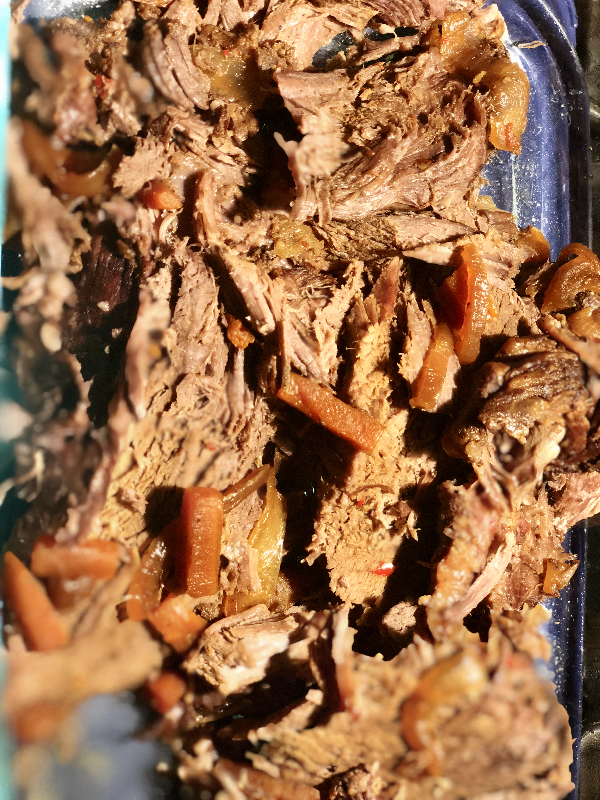

Slow Cooker Beef Roast

Description
Recipe by Ella Schwartz
This beef is cooked slowly with Worcestershire sauce, BBQ sauce, and spices. SO EASY! Set it up in the morning and you will have dinner ready when you get home. No mess in your kitchen. Use the sauce over egg noodles or rice.
Ingredients
2 lb. beef round roast
2 large carrots, chopped
1 large onion, thinly sliced
2 stalks celery, chopped
1 tsp garlic powder
pepper to taste
1/2 cup Worcestershire sauce
1/2 cup barbeque sauce
Steps
- Place beef round roast in slow cooker, then add carrots, onion, and celery.
- Season with garlic powder and black pepper.
- Pour Worcestershire and barbeque sauce over meat and vegetables.
- Cook on Low until the meat is tender, 6 to 8 hours.
Original recipe found here.
Return to homepage